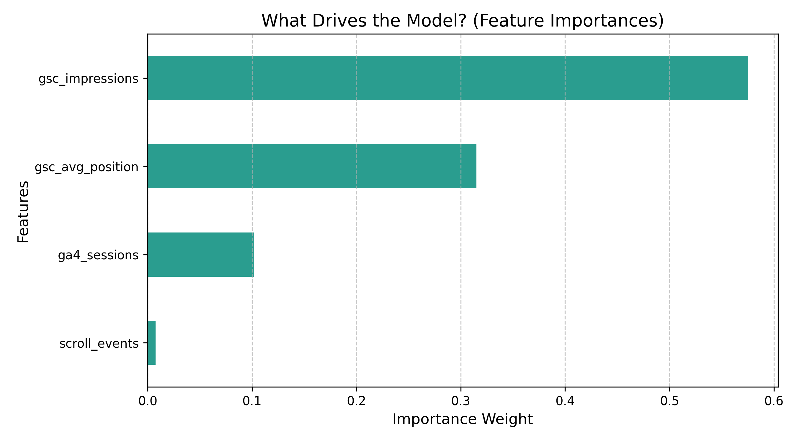
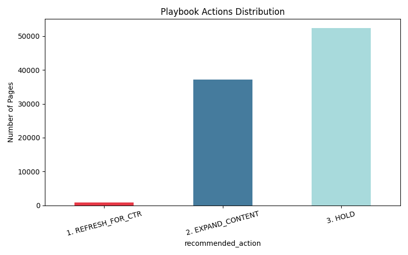

For content teams managing large portfolios, simplistic heuristic filters (e.g., "refresh all pages ranking on page 2") create either too many false positives or miss thousands of viable opportunities. The unit of analysis is the daily page. The cost of a wrong call is wasted editorial labor on dead pages. This project builds a quantitative classification model to answer a specific operational question: Based on current physical visibility, does this page possess the active potential to capture clicks? Data and ML automate this triage at a scale humans cannot process manually.
We utilized a 30,000-row randomized sample from the FlyRank warehouse partition. To ensure strict public safety and avoid leakage, pseudonymous entity IDs (client_hash_id and content_hash_id) were deliberately retained exclusively for cross-validation grouping and never used as predictive features. Sibling target-leakage columns (specifically sessions_organic) were permanently excluded from the training set.
We established a transparent business heuristic baseline (Impressions > 500 AND Position > 10) representing the standard rule an SEO manager might build first. It is a fair comparison because it utilizes the exact same visibility metrics available to the model. On the grouped validation split, this rule achieved a precision of 0.731 but suffered from an overly conservative global accuracy of just 0.538 (barely outperforming the 49.5% base rate).
We framed the task as binary classification, defining the target proxy in one sentence: Does the page register at least one organic click during the observation window (has_clicks = True)? We selected a Random Forest Classifier because it captures non-linear thresholds in visibility metrics without requiring extensive feature scaling. The exact feature list includes gsc_impressions, gsc_avg_position, ga4_sessions, and scroll_events.
To prevent domain memorization, both the baseline and the model were evaluated simultaneously inside a strict 5-Fold Grouped Cross-Validation (GroupKFold) keyed on content_hash_id.
| Strategy | Validation Split | Precision | Accuracy |
|---|---|---|---|
| Rule-Based Baseline | 5-Fold Grouped | 0.731 | 0.538 |
| Random Forest ML | 5-Fold Grouped | 0.714 | 0.748 |
Error Analysis: The natural base rate of clicks in this sample is 49.5%. The Random Forest model provides a vastly superior global fit (0.748 accuracy) while maintaining highly competitive triage precision (0.714). The primary errors are false positives occurring on high-volume generic queries with naturally zero-click intent, which the model misinterprets as opportunity.

Interpretation: The feature importance analysis confirms the model relies heavily on pure physical visibility (Impressions and Position) to drive its predictions, successfully ignoring weaker engagement signals. A well-understood finding here is that physical visibility dictates opportunity far more than prior session depth.
Based on the model, pages are dynamically sorted into a 3-tier action playbook that a FlyRank editor can use immediately:
REFRESH_FOR_CTR: High impressions (>1,000) drifting to positions 11–30. Action: Optimize meta descriptions and titles.EXPAND_CONTENT: Strong rank (Top 10) but low GA4 sessions. Action: Expand content depth and multimedia.HOLD: Stable baseline performance. Do not touch.
Confidence & Limits: We are highly confident in the model's ability to filter out "Hold" noise. However, this is an observational decision-support tool, not a causal forecasting engine. It classifies contemporaneous visibility potential and does not explicitly forecast future time-series decay.
| content_hash_id | max_impressions | avg_position | max_sessions | recommended_action |
|---|---|---|---|---|
...edeb93b7c4f |
24,577 | 18.61 | 216 | 1. REFRESH_FOR_CTR |
...753806d7af3 |
15,522 | 14.39 | 63 | 1. REFRESH_FOR_CTR |
This entire study is fully reproducible. The execution environments, data extraction queries, grouping logic, and random seeds (random_state=42) are committed in the public Jupyter notebooks within the project repository.
Repository: github.com/s-safwan/ml-internship-flyrank